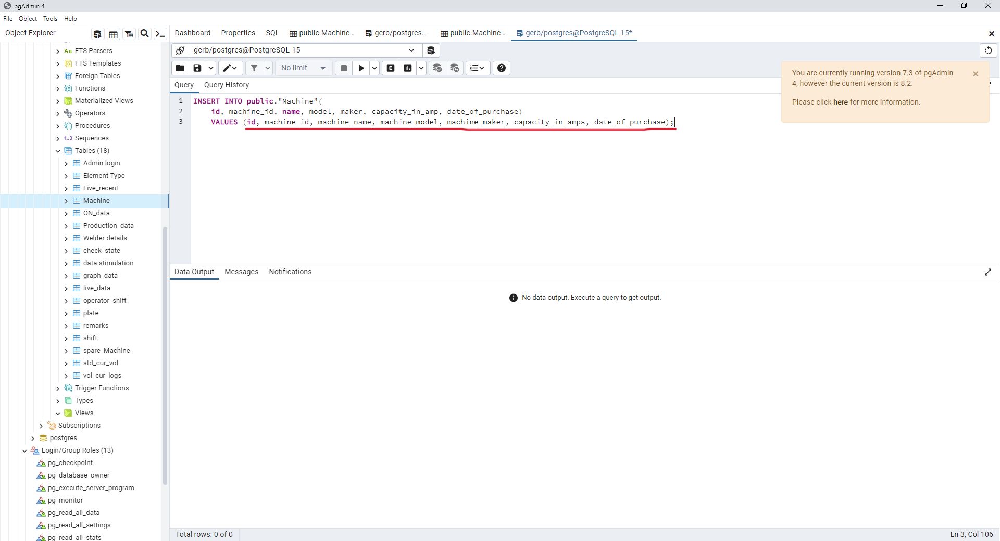
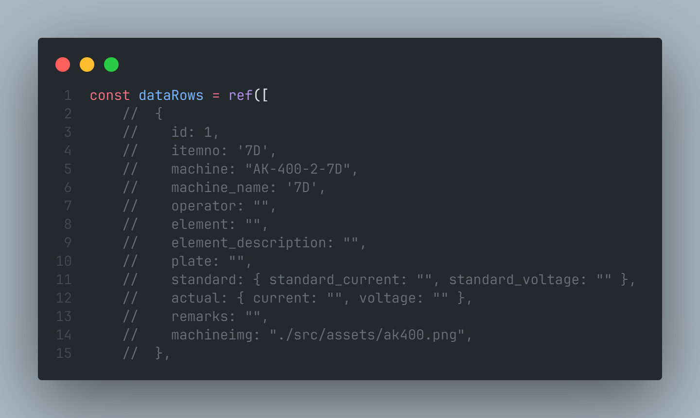
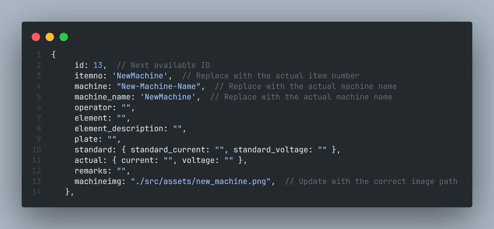

Introduction
In this section of the documentation, you will find solutions addressing common issues that may arise.
How to add a new machine?
Backend
- Navigate to the database, select the 'Schemas' tab, locate the 'Table' (Machine), right-click, and choose 'Script' to generate and insert the script.

2.Modify the values to reflect the appropriate data for the 'Machine' table.

Frontend
To add a new machine to the existing dataRows array in your JavaScript code, follow these steps:

1. Identify the Next Available ID:
- Find the last item in the
dataRowsarray and determine its ID. - Assign the new machine's ID as the next number after the last ID.
2. Create a New Machine Object:
- Copy one of the commented-out machine objects (e.g., the commented-out block for the 7D machine) as a template.
- Replace the placeholder values (e.g., '7D', 'AK-400-2-7D', etc.) with the actual values for the new machine.
3. Update Image Path:
- Replace the
machineimgvalue with the correct path to the image for the new machine.
4. Add the New Machine Object to dataRows:
- Uncomment the copied machine object by removing the // from the beginning of each line.
- Add the new machine object to the
dataRowsarray.
5. Update Data Binding:
-
If your application relies on data binding, make sure to update the corresponding bindings in your application code to include the new machine data.

How to use docker?
Using Docker for Containerized Deployment
Follow these steps to build, tag, push, and run your Docker container:
-
Build the Docker Image:
docker build -t <img_name>:<tag_name> .This command builds a Docker image using the Dockerfile in the current directory, tagging it with the specified image name and version.
-
Tag the Docker Image:
docker tag <img_name>:<tag_name> <username>/<repo_name>:<tag>Tag the previously built image with your Docker Hub username, repository name, and desired version tag.
-
Login to Docker Hub:
Ensure you are logged in to Docker Hub before pushing the image. Use the following command and follow the prompts.
docker login -
Push the Docker Image:
docker push <username>/<repo_name>:<tag_name>Upload the tagged Docker image to your Docker Hub repository.
-
Run the Docker Container:
docker run -e --name <container_name> -p <p_num>:<p_num> <username>/<repo_name>:<tag_name>
Deploy a container from the specified image, setting environment variables and mapping ports as needed.
Key Points:
- Ensure you replace placeholders such as img_name, tag_name, username, repo_name, and container_name with your actual values.
- The -e option in the docker run command sets an environment variable in the container.
- Adjust the IP address, port mappings, and any other parameters based on your specific requirements.